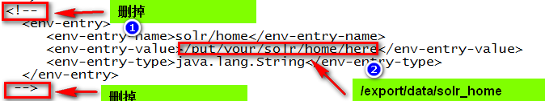
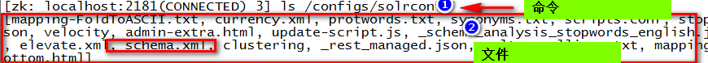
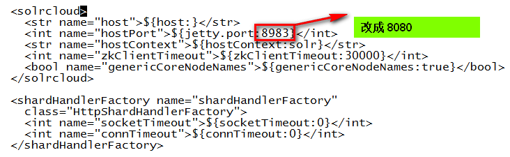
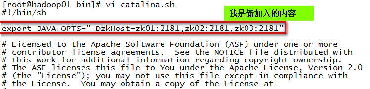
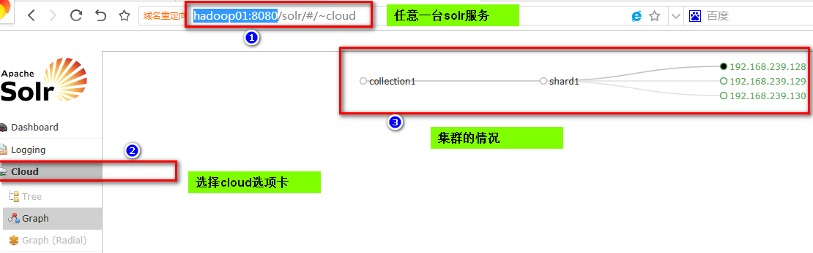
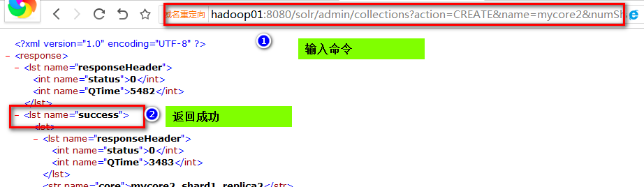
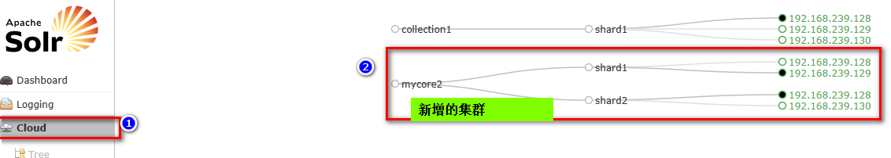

第一部分：初始化环境
第二部分：在Linux上部署单机版本的solr
第三部分：配置集群
第四部分：配置新的集群
192.168.239.128 node1
192.168.239.129 node2
192.168.239.130 node3
mkdir -p /export/software
mkdir -p /export/servers
mkdir -p /export/data
chkconfig iptables off
service iptables stop
service iptables status
tar -zxvf solr-4.10.2.tgz -C /export/servers/
tar -zxvf apache-tomcat-7.0.57.tar.gz -C /export/servers/
mkdir -p /export/data/solr_home
ln -s apache-tomcat-7.0.57/ tomcat4solr
cd /export/servers/solr-4.10.2/example/webapps
cp solr.war /export/servers/tomcat4solr/webapps/
cd /export/servers/tomcat4solr/bin/
./startup.sh
./shutdown.sh
cd /export/servers/tomcat4solr/webapps/solr/WEB-INF/
vi web.xml
修改内容,并保存。

cp /export/servers/solr-4.10.2/example/lib/ext/* /export/servers/apache-tomcat-7.0.57/webapps/solr/WEB-INF/lib/
cd /export/servers/solr-4.10.2/example/solr
cp -r collection1/ /export/data/solr_home/
cd /export/data/solr_home/
mkdir lib
cd lib/
cp -r /export/servers/solr-4.10.2/contrib/ .
cp -r /export/servers/solr-4.10.2/dist/ .
cd /export/data/solr_home/collection1/conf
vi solrconfig.xml
cd /export/servers/tomcat4solr/webapps/solr/WEB-INF/lib/
cp -r /export/servers/solr-4.10.2/example/lib/ext/* .
启动solr即使启动tomcat
cd /export/servers/tomcat4solr/bin
./startup.sh
http://{u solr hostname}:8080/solr
总结，需要将两个solr的安装目录拷贝到其他机器上。
在hadoop02上操作
mkdir -p /export/data/solr_home
mkdir -p /export/servers/tomcat4solr
在hadoop03上操作
mkdir -p /export/data/solr_home
mkdir -p /export/servers/tomcat4solr
在hadoop01上执行
scp -r /export/data/solr_home/* hadoop02:/export/data/solr_home/
scp -r /export/servers/tomcat4solr/* hadoop02:/export/servers/tomcat4solr/
scp -r /export/data/solr_home/* hadoop03:/export/data/solr_home/
scp -r /export/servers/tomcat4solr/* hadoop03:/export/servers/tomcat4solr/
问题，如果scp命令出错，就安装一个软件。
yum install openssh-clients -y
主要是solrconfig.xml和scheme.xml、
cd /export/servers/solr-4.10.2/example/scripts/cloud-scripts
./zkcli.sh -zkhost zk01:2181,zk02:2181,zk03:2181 -cmd upconfig -confdir /export/data/solr_home/collection1/conf/ -confname solrconf
如果出现unzip的错误，直接安装unzip的包
yum install -y unzip
使用zookeeper的客户端命令查看zookeeper的目录树
zkCli.sh

修改配置文件
cp /export/servers/solr-4.10.2/example/solr/solr.xml /export/data/solr_home/
cd /export/data/solr_home/
vi

发送给其他节点
scp solr.xml hadoop02:$PWD
scp solr.xml hadoop03:$PWD
修改每一台solr的tomcat 的 bin目录下catalina.sh文件中加入DzkHost指定zookeeper服务器地址。
cd /export/servers/tomcat4solr/bin
vi catalina.sh
export JAVA_OPTS="-DzkHost=zk01:2181,zk02:2181,zk03:2181"

然后分发到到其它机器上
scp catalina.sh hadoop02:$PWD
scp catalina.sh hadoop03:$PWD
在hadoop01上
cd /export/servers/tomcat4solr/bin
./startup.sh
在hadoop02上
cd /export/servers/tomcat4solr/bin
./startup.sh
在hadoop03上
cd /export/servers/tomcat4solr/bin
./startup.sh
然后访问任意一台solr服务，可以看到集群配置成功。

http://hadoop01:8080/solr/admin/collections?action=CREATE&name=mycore2&numShards=2&replicationFactor=2&maxShardsPerNode=8&property.schema=schema.xml&property.config=solrconfig.xml
name指明collection名称
numShards指明分片数
replicationFactor指明副本数
maxShardsPerNode 每个节点最大分片数（默认为1）
property.schema：指定使用的schema.xml，这个文件必须在zookeeper上。
property.config：指定使用的solrconfig.xml，这个文件必须在zookeeper上。

查看cloud管理界面：
